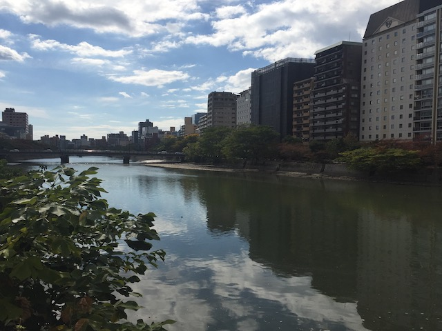
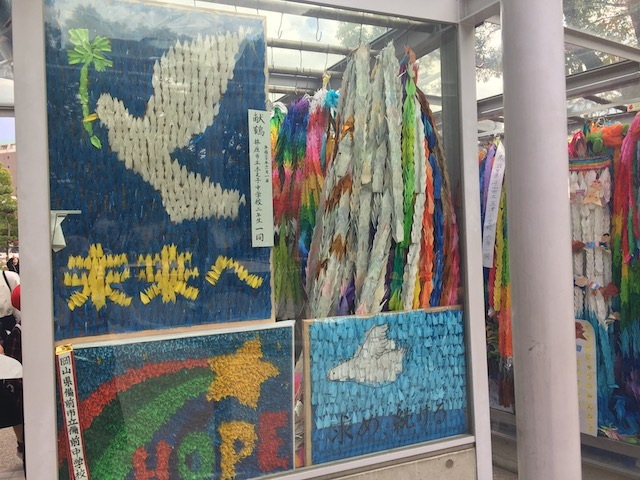
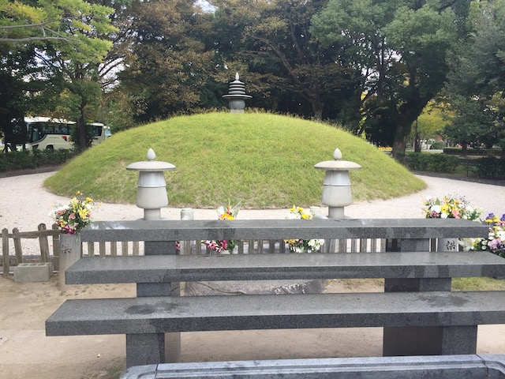
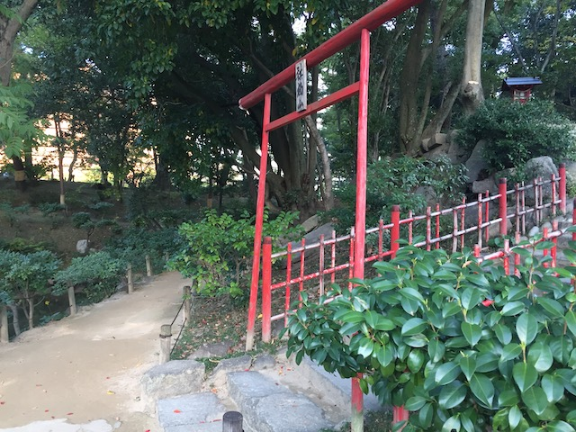
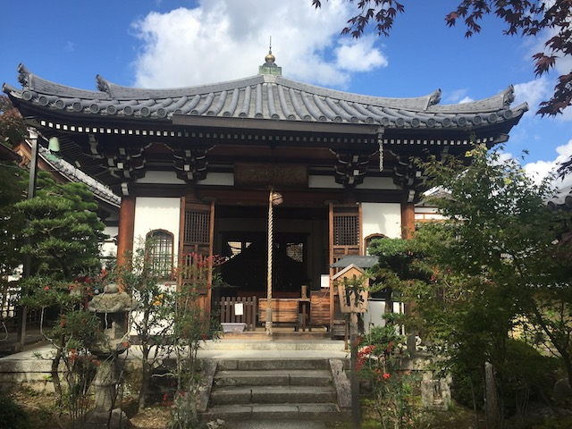
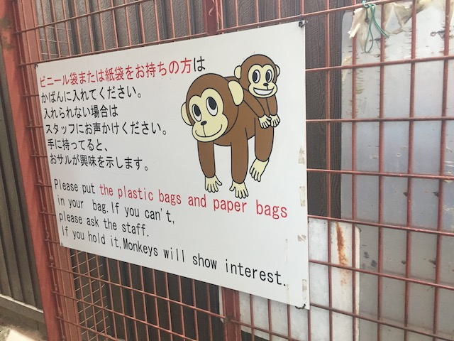

| |
JAPAN 2018!!! =)
Osaka Universal Studios Japan Parque Espana Nagashima Spaland
Hiroshima & Kyoto
Tobu Zoo Fuji-Q Highlands
Tokyo Joypolis Tokyo Dome City Yomiuriland Sea Paradise Hamanako Pal Pal Tokyo Disney Resort Yokohama Cosmoworld
Toshimaen
All right. For the next couple days, the trip stops being a coaster trip and sort of just becomes just a regular sight-seeing tourism trip that normal people take. Because I don't just want to only do coasters in Japan. I also want to actually...SEE Japan, and enjoy some of the non-coaster stuff. The next two days were me having non-coaster days at Hiroshima and Kyoto. And I figured that instead of having two small updates, I'd rather combine the two into one big update (If you're concerned that I didn't explore Tokyo because there's no Tokyo update, don't worry. I saw a lot of Tokyo. I just didn't specifically have an update for it since....I did all my exploring on park days). Anyways, we're here in Hiroshima.
I'm enjoying the futuristic mushroom-like fountains they've got here in Hiroshima.

Hiroshima is a very nice city. Hmm. Wonder if anything historical happened here that drove me to visit this place?
I've seen these Coca Cola polar bears all over Japan. Love that the bears get more love in Japan than back home.
Much like how there's just a castle in the middle of Osaka, there's also just a castle in the middle of Hiroshima. We didn't go inside it because we got our castle fix in Osaka, but it's so cool to just know that there are all these ancient castles still around in all these historical Japanese cities.
Just strolling though the Hanover Garden. I didn't know what this was. It just seems to be some random garden that I stumbled upon walking through Hiroshima. But hey. I'm happy to come across this.
So the garden is a gift to Hiroshima from Hanover, a city in Germany. (You can read the plaque that describes it here) Hmm, a symbol of friendship between Japan and Germany. I wonder what those two countries have in common (Aside from being two of my favorite countries that I love visiting)?
No. We are not exploring the Hiroshima Childrens Museum. Even if we mentally act the age to do so.
No. This is gonna be a much more serious update on Incrediblecoasters.
Hello Ota River. How's it going?
Yeah. We're here at the Hiroshima Peace Memorial Museum, for obvious reasons.
So for those of you who flunked history in High School, at the very end of World War II, the United States developed the nuclear bomb, and wanting to end World War II quickly, dropped two nuclear bombs on Japan, specifically Hiroshima (where we are now) and Nagasaki.
Statue for a Prayer for Peace. Hey, I'd rather have a statue advocating for peace rather than another sh*tty song.
"You already nuked us in the past. And don't play dumb with us. We know what you do with drones in the Middle East. You're not f*cking us over again."
Yeah. This building was nuked. Bad things happened to it.
Sorry folks. The Peace Memorial Museum is closed today. Peace is broken right now.
In the middle of the Peace Memorial Park is the Memorial Cenotaph.
So basically, the cenotaph is a shrine and a memorial underneath the saddle shaped memorial that has the names of everyone who died in the nuking of Hiroshima. Cool, though I will admit. The saddle really distracts from the cenotaph. To the point where I solely thought the saddle was everything until doing more research back home.
OK. So this is my 6th day in Japan, and this is the first time I see the Japanese flag fly. In fact, the Peace Memorial Park is the ONLY time I saw the flag fly. Hell, even when in Europe, I rarely saw the different country flags fly. So much nicer here rather than home where we shove--you know what, I'm gonna keep my mouth shut and not spout a controversial opinion of mine on a website that's supposed to be about roller coasters, cliff jumping, and having silly fun.
So there was a group of schoolkids here on a feild trip, since...yeah. This is the kind of place that a school would take students on a field trip to. They were friendly and seemed happy to see that a tourist and a Westerner was here.
Here's the cenotaph for the Korean victims of the nuking of Hiroshima.
Fun little history lesson. Japan kept a lot Koreans as prisoners as...they sort of occupied the Korean Peninsula along with several other places during World War II. So a lot of Koreans were living in Japan, and died when Japan got nuked. Japan never acknowleged them until 1970, since,..Japan was not nice to Koreans and pretty much held the attitude of "F*ck them!" for a long time.

I have to admit. I really like all the local peace art that they put in the Hiroshima Peace Park in an effort to push peace more.

So this is the Atomic Bomb Memorial Mound. Doesn't look like much, just a hill. But this mound is where all the cremated remains of everyone who died in Hiroshima is located.
Here's the Memorial Tower for the Mobilized Students.
I can't read any of that since I don't know Japanese, but here are the names of the student victims and what they did.
 I'm not sure if this fountain has any specific peace meaning being in the Hiroshima Peace Memorial Park, or if it's just a random fountain in the park.
I'm not sure if this fountain has any specific peace meaning being in the Hiroshima Peace Memorial Park, or if it's just a random fountain in the park.
And over here, we have the Atomic Bomb Dome.
No, it's not just a cool name. It's actually the one building that survived the nuking of Hiroshima. So naturally, it became a big icon in the area.
So if you visit the Peace Park Memorial, they have survivors from the blast who come to personally show tourists the horrors of the nuking of Hiroshima, tell their story, give you detailed literature about the horrors, and advocate for world peace and a nuke-free world. For instance, this guy who's mom survived the Nuking of Hiroshima while she was pregnant with him, and he survived the pregnancy birth-defect-free. He was here today, describing the horror story of the nuking, asking me and a couple other tourists where we were from (Hi! I'm from the country that nuked you and is currently a horrifying joke today!), and it was just good to talk to this guy.
If you want more information, first off, do some f*cking homework. It's called Google. But I do recommend this video (Always enjoyable to watch Hank Green). It's primarily about the history of how nukes got made, and the history of the science. But they still go over Hiroshima getting nuked, and I know they frame the video as neutral to be professional, but it's pretty clear that nuking Hiroshima & Nagasaki wasn't necesarry to end World War II.
Well, that's the darkest and most depressing any update has gotten on Incrediblecoasters. Gotta lighten the mood. Hey look! A Pokemon Center! Pika-Pika! Pikachu!
Seriously, let's stop seeing that Hiroshima was nuked during World War II and see how the city is today.
Well, those covered Main Streets that Japanese parks love, it turns out the cities love them too. =)
OK. So I was repeatedly told that I had to stop and eat at Grams sometime while in Japan. So, here I am.
So Gram's Cafe is a pancake house. Except the pancakes they serve here are SUPER fluffy. Like, no really. They're damn near cakes. They really emphasize the CAKE in PanCAKE. Some of the best pancakes ever. They mostly are in Japan, but they're expanding. Primarily to other Asian Countries, but they are opening their first US location. And it's in San Francisco. Yeah, it's the wrong half of my home state, but it's still my home state! I may not live there, but I go to the Bay Area at least once a year. Plus, I have family that lives up there. So yeah. Expect me to eat at Gram Cafe in San Francisco. =)
OK. Carousel horses do NOT smile like that. It almost looks like...kind of makes me wish I went inside the Art Museum. If only to see more of those Carousel Horses.
All right. We're now gonna check out Shukkein.
What the hell is this place? And why am I on a path?
Holy Sh*t! We're in Japanese Gardens right now!
And of course, it wouldn't be a Japanese Garden without some Koi Fish.
You know, it's one thing to explore Japanese Gardens in San Francisco. That's fun and all. But...after visiting an actual historical Japanese Gardens, you just can't go back to the US stuff.
I just love walking around in here. So nice and relaxing.
I know everyone raves and orgasms about Japan in the spring for the Cherry Blossoms. And yeah, that looks amazing. And I haven't done Japan then (This trip is currently my only visit to Japan). But seeing Japan in the fall, with all the leaves changing color, it's really nice. Especially since we don't get fall in California.

If you're in Hiroshima, definetly make sure to check this place out.
Hiroshima skyscraper from the Shukkein.
Just a quick reminder. This used to be one dude's (Asano Nagaakira) private garden. But he opened it up to the public.
Well, that was a fun day in Hiroshima. Time to head back on the Shinkansen to Osaka.
I just took a photo of this, thinking it was a cool building in Osaka. It turns out that this is NAMBA Hips Center, which is basically a big indoor resort. It has Panchiko, Karaoke, an indoor golf course, fitness studios, tons of resteraunts, and tons of bars. So yeah. It turns out that this is a really cool place.
I just love walking around Osaka.
Aww. I miss the purple lighting I saw on the Aji River earlier.
All right. Time for some Yakatori. =)
Hello again Tsutenkaku. Enjoyed walking by last night, might as well say Hi again.
I found Pocky! For those who don't know Pocky is a sort of Japanese cookie, and is one of the few Japanese foods that is legitately popular in America, and is sort of a standard Japanese food. I didn't have any on this trip, but Pocky is something I can easily get back home.
All right. Moving onto Kyoto. Time to check that city out now.
A quick little history lesson on Kyoto. It was the previous capital of Japan, back during the Medevial period and the Early Modern period. So yeah. The city is FILLED with ancient wonders, lots of old historical stuff, and TONS of temples.
So obviously, being in Kyoto, we're seeing a temple. In particular, we're at the Sanshu-in Temple now.
Just in case you get lost here.
So the Sanshu-in Temple is just one of many temples that Arashiyama has (The part of Kyoto we're in).
Love the bamboo fountains they have here. =)
The entire city of Kyoto just has a HUGE Kurosawa vibe to it. So if ancient Japan interests you, and it's temples that you want to see, you're gonna wanna see Kyoto.

Let's get a closer look at the temple.
Lit candles out of respect for the temple.
Looks like they're gonna do a Japanese Tea Ceremony. In hindsight, I regret not doing that.
Surprisingly, there's not a ton of info this temple. So...here's more temple photos.
Not sure what this statue is of, but I'm just assuming that it's important.
Yes, I know that the Sanshu-In Temple gets overlooked due to other way more famous temples in Kyoto, including one that we'll be at later today. But it's still a nice place worth checking out if in the area.
I walked by some local who was passing out samples of these radishes. Radishes generally aren't something that I like. I tend to not like vegtables (My diet is terrible and everything I like is pretty much everything that's bad for you). But something about the radish was...weirdly addictive. It doesn't taste good, but for some strange reason, I'm going to keep eating it.
Come on everyone! There's more fun over here across the river!
 You don't see this animal walking around very often. ;)
You don't see this animal walking around very often. ;)
Today for lunch, we have Curry Udon. Similar to ramen, only with thicker noodles. Not sure if I'd declare it better than Ramen, but really, both are super good.
Again, no need to worry about the resteraunt not serving drinks. There's a vending machine right outside.
Today's Fanta flavor is White Grape. Now this may seem pointless. What's the difference between Fanta Grape and Fanta White Grape? Well, there's a couple differences. Fanta Grape has...a more mild taste. It's weird. Tastes...less artificual. And of course, it's really rare. I think this is only avaliable in Japan and a couple Eastern European countries. Still feels weird that there's a difference between Grape and White Grape.
More of the Katsura River.
Yep. We came here to visit the Arashiyama Monkey Park.
So the Arashiyama Monkey Park is...pretty much exactly what it claims to be. A place up on the hills of Arashiyama where you can look at these wild monkeys and just enjoy them.
Warning. Arashiyama Monkey Park is on top of a hill. And there's no elevator or escelator. >=)
Just looking at Kyoto across the river.

♫ "Feed the monkeys, tuppence a bag."♫
Those who complain about going up Samarai Summit at SFMM are not gonna have fun getting up here. Lazy assholes! Exercise more! =P
Basically, use common sense. Luckily, all of these things are natural for me (Seriously folks. Don't feed the monkeys or touch them).
You sure you didn't mean to write scared there? Either way, I will admit. The monkey is scary. ;)
We made it! We made it!
I came here to see monkeys, and damn it! I'm gonna see my monkeys!
The view of Kyoto is amazing from up here.
Boy, there sure are a lot of tourists at the Monkey Park.
So for a fee, you can also feed the monkeys here. And...yeah. That can be cool and all, but...I'd rather to not pay so that other animals can eat. ;)
Monkeys over Kyoto.
All right. So they have as a stopping point, a sort of playground. It's got a swing set, and a slide. However, the top of the slide is right where the monkeys are. Am I gonna walk down the stairs or slide down the slide? Come on. If you don't know the answer to this question, then you don't know me. =) (Hey, it's actually a fast slide. Narrow, but you go down it fast, and it's like 20-30 ft tall!)
It wouldn't be a visit to Kyoto if we weren't visiting another freaking shrine! =P
Yeah. This hour's shrine is Nonomiya.
It's certainly not a super well known shrine or anything, but...it's relatively known. Has its own Wikipedia page, and...it's nice. Though it's nothing compared to where we'll be later today.
Hey look! I found a geisha! For those of you super interested in that sort of culture, here you go (They tend to be in Kyoto, since...yeah. It was the capital of Japan back when Geishas were in).
OK. Let's be real. The real reason that most people visit Nonomiya (including me) is that it's right by the Arashiyama Bamboo Forest.
Yep. They have a freaking Bamboo Forest here. I think it might be the only Bamboo Forest in the world. But seriously. This place is freaking amazing. Highly recommend if in Kyoto.
Hmm. I wonder if any pandas are hanging around the bamboo forest? Seems like they'd like this place.
 Love how the train tracks just cross through the forest (OK, not through it, but it's still very nice).
Love how the train tracks just cross through the forest (OK, not through it, but it's still very nice).
Only ¥165 for a liter of gas here!? HOLY CRAP!!! Gas is cheap here! But hey, they have to compete with public transportation that's actually really good. ;)
Well, we have arrived at our destination. I wonder what's over here that's so special?
Oh joy. Yet another temple. You know, this site is IncredibleCOASTERS. Not Incredibletemples.
HOLY CRAP!!! I KNOW WHY THIS TEMPLE IS SO FAMOUS!!!
So yeah. The temple we're at today is Kinkaku-ji. It's one of the most famous temples in Japan, and yeah. You can clearly see why with its golden pavillion.
It's not often that you see a World Heritage site on Incrediblecoasters (There's actually 2 in this update) (OK. They do appear on the site from time to time).
This place has so much bling that I'm surprised it hasn't been bragged about by a rapper.
♫I don't need the stars in the night. I found my treasure.♫
OK. Kinkaku-ji is more than just the golden pavilion. Might as well explore that.
But seriously. It's not just the golden pavilion. All the ponds around it are also really beautiful.
Tsk tsk. So much wasted Yen.
Hey kids! Hello Kitty needs her very own Kinkaku-ji! Because Hello Kitty doesn't have enough shiny pretty things already. ;)
 Well, we're back in Osaka, and hey. Here's a local brew place. I'm sure this place would be good for dinner.
Well, we're back in Osaka, and hey. Here's a local brew place. I'm sure this place would be good for dinner.
Ooh! More Yakatori!
The food is really good here. Should've eaten a lot more though. F*ck being cheap and on a budget! More Pork and Cheese! And bring me some chicken wings, the bacon wrapped Asparagus, and I might try something else too! Damn budget!
Back at the Peace House Abeno, one of the German Girls (I think) brought back these pig candies. I think she brought them from Germany and passed them around to everyone. These things are f*cking good! Also, it's nice to get a little bit of German snacks on my Japan trip.
Remember when I bought those cookies during my 17 hour layover in Shanghai, yeah. Time to break them out. What better to eat with German candy than Chinese cookies. But seriously, not bad. =)
Thank you Peace House Abeno for being a really good base camp for the Osaka portion of my Japan trip. I'll gladly pin where I'm from (and also leave a good rating).
Tobu Zoo
Home
|
{kind=link}